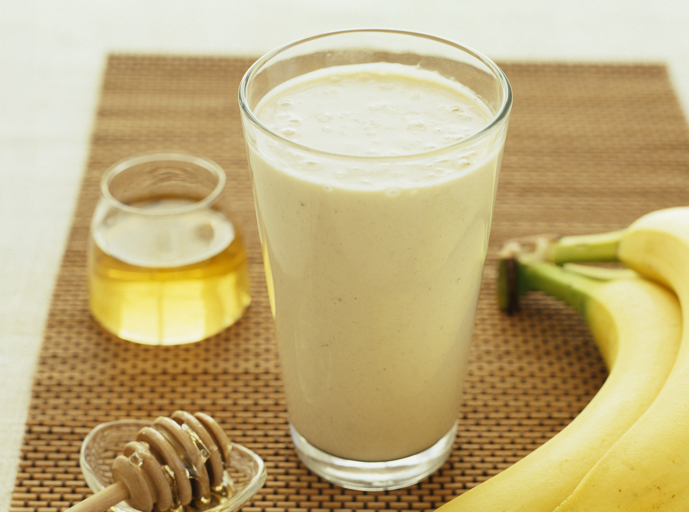

Banānu piena mikslis

(MANS PAZEMĪGAIS VIEDOKLIS):
ŠĪ RECEPTE IR IDEĀLA ĀTRĀM UN UZTURVIELĀM BAGĀTĀM
BROKASTĪM. DERĒS ARĪ KĀ ĀTRA UZKODA STARP LIELAJĀM
ĒDIENREIZĒM. ES PERS0NĪGI VIENKĀRŠI TE LIEKU VISU
KAS PAGADĀS UN BEIGĀS VIENMĒR IZDODAS NOĶERT ĪSTO
GARŠU BUĶETI. APSOLU, KA PĒC 2 ŠĪ PADZĒRIENA GLĀŽU
NOTIESĀŠANAS, JUTĪSIES KĀ PIERIJIES ZIRGS. VILKS UZ
SNAUDU.
Sastāvdaļas:
- 500ml Piens (govs vai augu)
- 2-3 Banāni (derēs gan zaļi gan borderline sapuvuši)
- Liela karote Z-riekstu sviesta
- Mazliet auzas
- Karote medus
- Var pielikt ogas
- Un jebko citu, ko sirds kāro
Pagatavošana:
- Nomizo banānus, tos saplēš gabaliņos, iemet traukā
- Banānus sablenderē
- Pievieno pienu, Zriekstu sviestu
- Pārējās sastāvdaļas var pievienot vai nu pirms vai pēc piena pievienošanas, galvenais lai beigās viss ir viendabīgā masā
- Izbaudiet padzērienu!
GO BACKKKKK